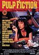

Currently studying at EDHEC Business School, attending the MSc Big Data and Digital Business. Before my last year of studies I was on a gap year in Paris, where I worked at EY and Bpifrance with startups.
|  |
Pulp FictionPulp Fiction is a 1994 American black comedy neo-noir crime film written and directed by Quentin Tarantino, from a story by Tarantino and Roger Avary. |
Star TrekStar Trek is a 2009 American science fiction adventure film directed by J. J. Abrams and written by Roberto Orci and Alex Kurtzman. |